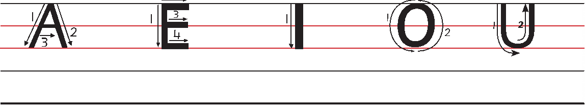
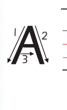

Unit Three - Writing vowel letters in uppercase - Lesson 1: Letter A
Unit Three
Writing vowel letters in uppercase

A picture of the uppercase vowels A, E, I, O, and U shown in source order on handwriting lines with numbered stroke-direction arrows.
Lesson 1
Letter A
A picture of an illustration of ant, the example word for this letter lesson.ant
Draw the following pattern.
A continuous row of alternating diagonal strokes forming repeated narrow peaks and valleys.
Trace the letter A.

A picture of the stroke-direction diagram for uppercase A. Follow the numbered arrows. Draw a diagonal stroke up to the top, draw a diagonal stroke down to the right, then add the middle crossbar from left to right.